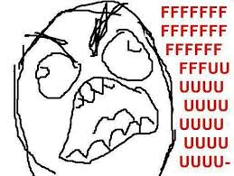
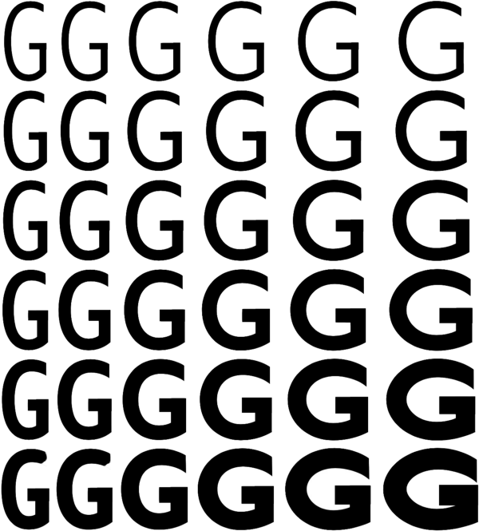

CSS in 2018
“we are solving problems. css has largely been 'making it work' or pushing limitations to build beyond your means. Latest updates and innovations are allowing new things and a way to build the right way”Chris Coyer, CSS in depth
An absurdly short history of CSS
.container_12 {
margin-right: auto;
margin-left: auto;
width: 960px;
}
.grid_1,
.grid_2,
.grid_3,
.grid_4,
.grid_5,
.grid_6,
.grid_7,
.grid_8,
.grid_9,
.grid_10,
.grid_11,
.grid_12 {
display: inline;
float: right;
margin-right: 10px;
margin-left: 10px;
}
.container_12 .grid_1 {
width: 60px;
}
.container_12 .grid_2 {
width: 140px;
}
.container_12 .grid_3 {
width: 220px;
}
.container_12 .grid_4 {
width: 300px;
}
...
CSS Grid
.container {
display: grid;
grid-template-columns: repeat(12, 1fr);
}
one
two
three
four
.container {
display: grid;
grid-template-columns: 40px 25% 3fr 1fr;
}
.item {
grid-column: 1 / 3;
grid-row: 1 / 1;
}
.container {
grid-template-columns: 3fr 3fr 3fr 1fr;
grid-template-rows: auto;
grid-template-areas:
"header header header header"
"main main . sidebar"
"footer footer footer footer";
}
.item-a {
grid-area: header;
}
.item-b {
grid-area: main;
}
.item-c {
grid-area: sidebar;
}
.item-d {
grid-area: footer;
}
Can you align that heading?
text-align: center;
..no i mean vertically?

flexbox
.align {
display: flex;
place-items: center;
}
justify-content

align-items

@media all and (min-width: 800px) {
.main { flex: 3 0px; }
.aside-1 { order: 1; }
.main { order: 2; }
.aside-2 { order: 3; }
.footer { order: 4; }
}
CSS Supports
@supports (display: grid) {
div { display: grid; }
}
@supports not (display: grid) {
div { float: left; } /* alternative styles */
}
filter effects
.filter-me {
-webkit-filter: grayscale(1);
filter: grayscale(1);
}

.filter-me {
-webkit-filter: sepia(1);
filter: sepia(1);
}
.filter-me {
-webkit-filter: saturate(8);
filter: saturate(8);
}
.filter-me {
-webkit-filter: hue-rotate(90deg);
filter: hue-rotate(90deg);
}
.filter-me {
-webkit-filter: invert(.8);
filter: invert(.8);
}
.filter-me {
-webkit-filter: contrast(4);
filter: contrast(4);
}
.filter-me {
filter: blur(20px);
}
blend-mode
header h1 {
font-family: 'Alegreya Sans SC', sans-serif;
font-size: 130px;
color: red;
mix-blend-mode: screen;
}
object-fit
img {
height: 100%;
width: 100%;
}
img {
height: 100%;
width: 100%;
object-fit: cover;
}

clip-path
.clip-circle {
clip-path: circle(60px at center);
}
.clip-ellipse {
clip-path: ellipse(60px 40px at center);
}
.clip-polygon {
clip-path: polygon(5% 5%, 100% 0%, ...);
}
shape-outside
.element {
float: left;
shape-outside: circle(50%);
width: 200px;
height: 200px;
}
focus-within
input[type=text]:focus {
border-color: #4697e4;
}
form:focus-within {
background: #f9f98b;
}


css variables
:root {
--main-color: red
}
.test {
color: var(--main-color)
}
:root { --myColor: blue; }
div { --myColor: green; }


currentcolor
body { color: red; }
div { border: 5px solid currentColor; }

css in JS
const Button = styled.button`
border-radius: 3px;
padding: 0.25em 1em;
margin: 0 1em;
${props => props.primary && css`
background: palevioletred;
color: white;
`}
`;
render(
);
Scoped CSS to element
Use JS to interpolate values
No unused code
However...
Ties CSS to JS convention
Duplication of scoped CSS
its ugly
The future


variable fonts
@font-face {
font-family: 'source sans';
src: url(SourceSansVariable.woff2) format("woff2-variations"),
url(SourceSans.woff2) format("woff2"); /* for older browsers */
font-weight: normal; font-style: normal;
}

wght
wdth
scaleY
ital
slnt
h1 {
font-variation-settings: "wght" 850, "wdth" 100, "ital" 1;
}
css4 selectors
p:nth-of-type(2) { color: red; }
a[href^="https"] { color: blue; }
multiple :not selector
p:not(:first-child, .special) {
color: red;
}
matches selector
p:matches(:first-child, .special) {
color: red;
}
has selector
section:has(h1, h2, h3) {
background-color: green;
}
placeholder-shown selector
input:placeholder-shown {
color: blue;
}
Houdini
“Houdini is a new W3C task force whose ultimate goal is to introduce a new set of APIs that will, for the first time, give developers the power to extend CSS itself, and the tools to hook into the styling and layout process of a browser’s rendering engine.”Philip Walton, Google


Things we didn't cover
- Backdrop filter
- Conic gradients
- Will Change
- display: contents
- caret-color
- text-decoration styling
- css counters
- min() and max()